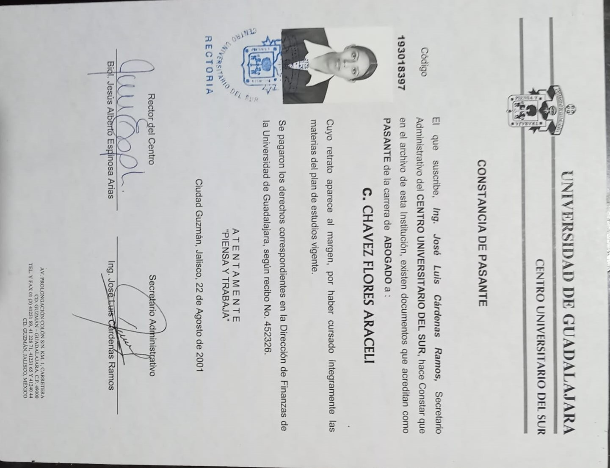
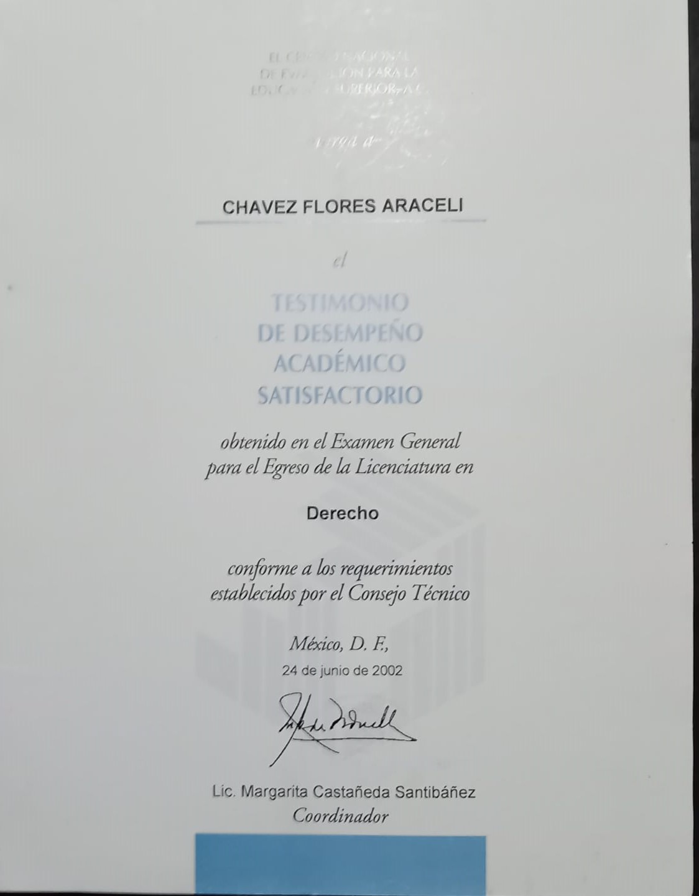
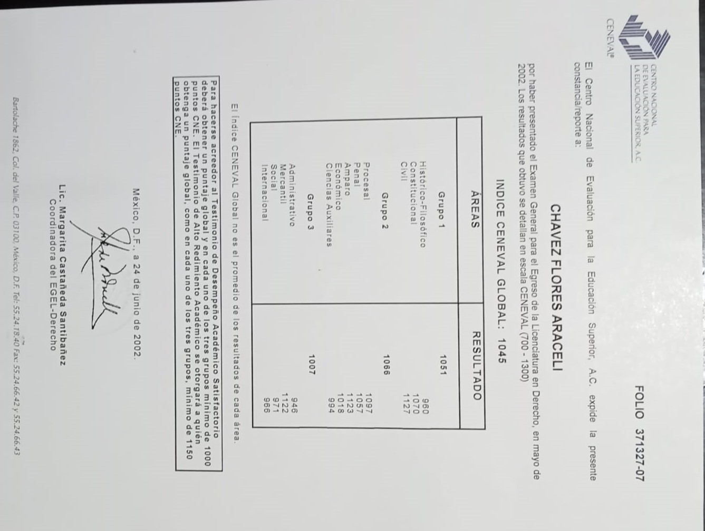
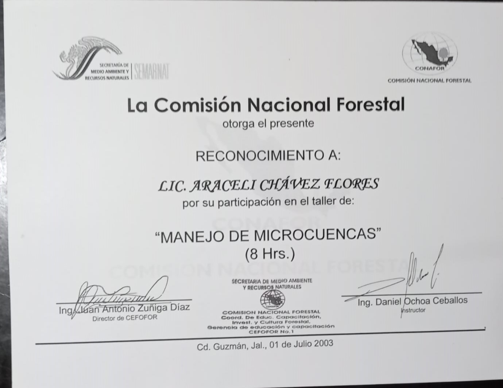
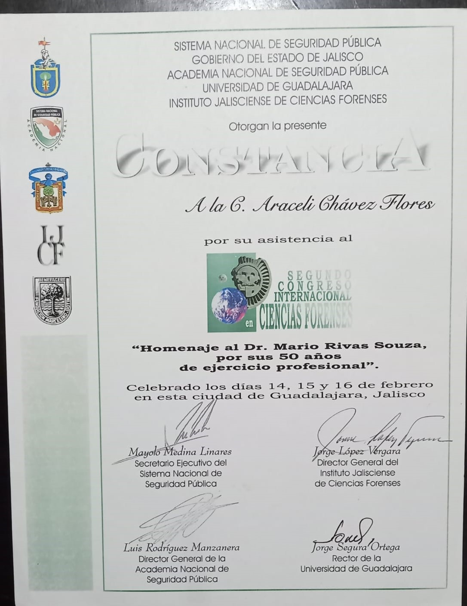
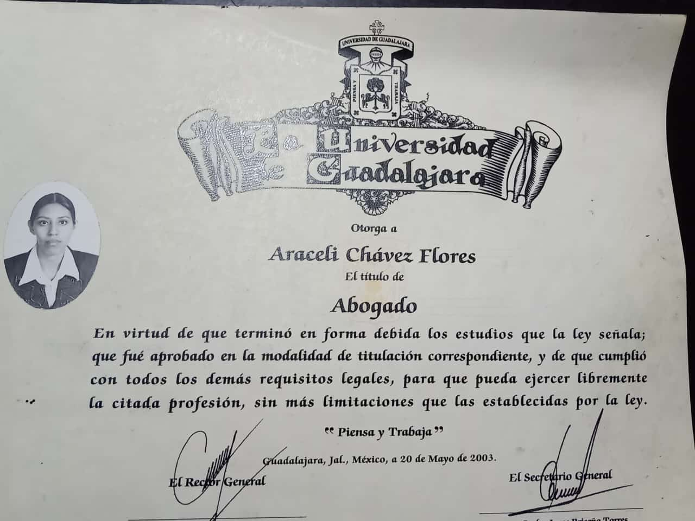

Galeria y Recuerdos
Fotos
Las fotos que voy a mostrar a continuación, es lo que la entrevistada logró en su carrera coomo estudiante de Derecho.
Constancia de Pasante

Examen General para el Egreso de la Licenciatura en Derecho

Resultados

La Comisión Nacional
MANEJO DE MICROCUENTAS

Constancia
Segundo Congreso Internacional Ciencias Forences

Título Universitario
